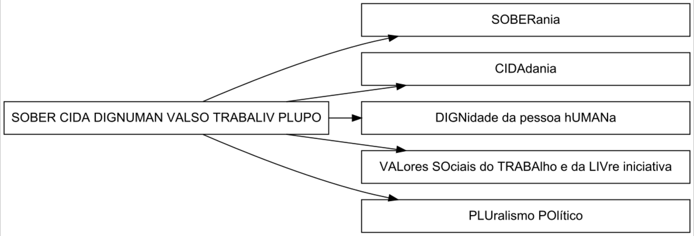
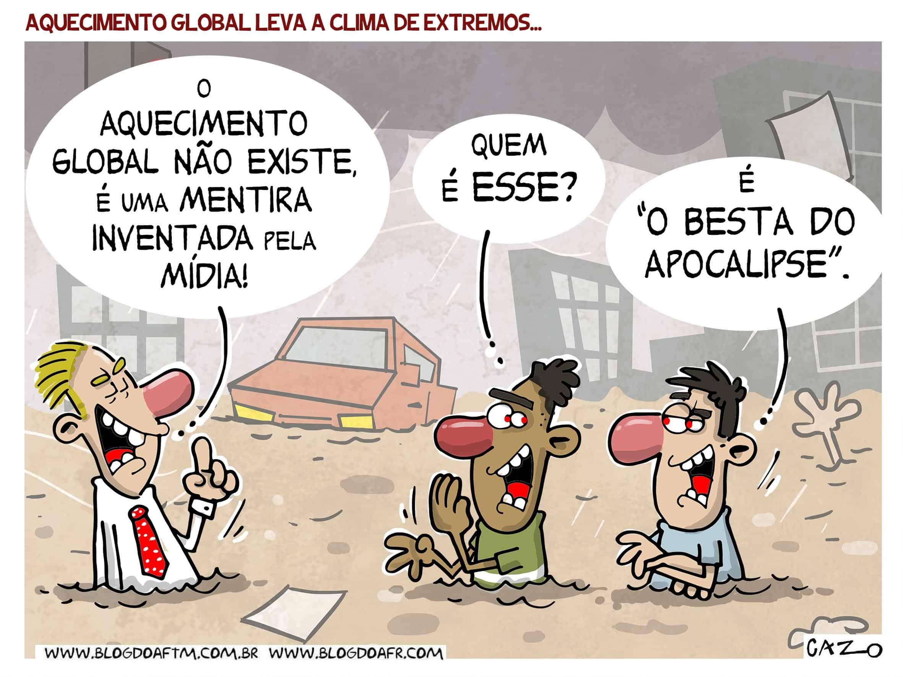
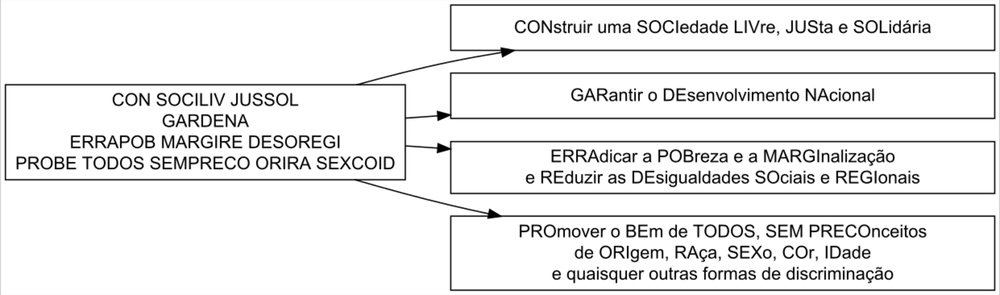

Constituição Federal da República Federativa do Brasil de 1988
Experimente a consulta à CF/88 em um versão de livro digital: https://lsbjordao.github.io/CF88/.
A Constituição Federal de 1988 foi aprovada pela Assembleia Nacional Constituinte em 22 de setembro e promulgada em 5 de outubro do mesmo ano, ficando conhecida como a Constituição Cidadã. Ela pode ser alterada por emendas, permitindo autocorreção do texto constitucional, mas não se pode propor emendas que suprimam as Cláusulas Pétreas (direitos fundamentais e a estrutura do Estado). A Constituição assegura um extenso rol de direitos e estabelece o controle concentrado de constitucionalidade, que é realizado pelo Supremo Tribunal Federal (STF). Além disso, define a divisão tripartite dos poderes (Executivo, Legislativo e Judiciário), com a respectiva delimitação de suas competências Wikipedia.
Forma Federativa do Estado
O Brasil é uma República Federativa que compreende a Uniãos, os Estados, o Distrito Federal e os Municípios, todos autônomos. Essa união indissolúvel é uma cláusula pétrea segundo o art. 60 § 4º.
A autonomia federativa assenta-se em dois elementos básicos:
- existência de órgãos governamentais próprios; e
- posse de competências e poderes exclusivos.
A repartição de competências entre a União, os Estados-membros, Municípios e o Distrito Federal dá origem a um estrutura estatal complexa em que diversas esferas governamentais se manifestam sobre uma mesma população e um mesmo território.
Segundo a teoria do federalismo, a repartição de poderes autônomos constitui o núcleo do conceito do Estado Federal. Poderes, estes, distribuídos entre as entidades autônomas, que passam a compor seu campo de atuação e de jurisdição, a sua área de competência.
Supremacia da Constituição
A supremacia da Constituição é um princípio fundamental do direito constitucional que estabelece a Constituição como norma superior dentro do ordenamento jurídico de um Estado.
Esse princípio significa que todas as outras normas e atos normativos devem estar em conformidade com os preceitos constitucionais. Caso contrário, são considerados inconstitucionais e, portanto, inválidos.
A supremacia da Constituição assegura a estabilidade e a coerência do sistema jurídico, pois garante que os direitos e deveres fundamentais, bem como as estruturas de poder e as normas que regem o Estado, estejam sempre alinhados aos princípios originários constitucionais.
Esse princípio também se reflete no controle de constitucionalidade, que permite que o poder judiciário, por meio de tribunais especializados, verifique se as leis e atos normativos estão de acordo com a Constituição. A supremacia da Constituição, portanto, é essencial para a proteção da democracia e dos direitos fundamentais, funcionando como uma espécie de baliza que orienta todo o ordenamento jurídico do país.
A existência do controle de constitucionalidade está diretamente ligada à supremacia formal da Constituição, um atributo típico das constituições rígidas. Essa supremacia significa que a Constituição ocupa o topo da hierarquia normativa, funcionando como fundamento de validade para todas as demais normas do ordenamento jurídico.
A rigidez constitucional, por sua vez, refere-se à dificuldade de modificar a Constituição, exigindo procedimentos mais complexos e solenes do que aqueles aplicáveis às leis ordinárias. Essa característica assegura a estabilidade do texto constitucional e reforça sua posição como norma suprema.
Valores Fundamentais
Os fundamentos da República Federativa são enumerados no art. 1º da CF/88

Soberania
A soberania é um dos pilares fundamentais do Estado e representa a autoridade máxima e irrestrita de um país sobre seu território e população e independência perante outros países e sua autoridade para decidir sobre seus próprios assuntos, sem interferência externa. Isso significa que o Brasil tem poder supremo dentro do seu território e pode se organizar politicamente conforme suas próprias leis e interesses.
A Base Espacial de Alcântara, localizada no Maranhão, é um exemplo complexo de interação entre soberania nacional, acesso restrito e questões ambientais. Embora o Brasil seja soberano sobre o território, áreas específicas da base são de acesso restrito, especialmente aquelas utilizadas por parceiros internacionais como os Estados Unidos, conforme o Acordo de Salvaguardas Tecnológicas (AST). Esse acordo permite o uso comercial da base por empresas estrangeiras, mas impõe limitações ao Brasil, como a proibição de lançar satélites próprios a partir da base.
Essa situação levanta questões sobre a soberania nacional, pois áreas dentro do território brasileiro ficam sob controle estrangeiro, limitando o acesso e a autonomia do Estado. Além disso, a construção e operação da base não foram precedidas por estudos de impacto ambiental adequados, o que gerou preocupações sobre os efeitos dos lançamentos de foguetes na região.
Em caso de danos ambientais decorrentes das atividades da base, a responsabilidade recai sobre o Estado brasileiro, que deve garantir a reparação dos danos e a proteção do meio ambiente, conforme estabelece a Constituição Federal.
Cidadania
A cidadania garante que os indivíduos tenham direitos e deveres dentro do Estado. Isso inclui direitos políticos, como votar e ser votado, e direitos civis e sociais, como liberdade de expressão, acesso à educação e saúde. Também significa a participação ativa da população na vida política e social do país.
A cidadania ambiental representa o exercício consciente dos direitos e deveres relacionados à proteção do meio ambiente. Ela envolve a participação ativa dos cidadãos na preservação dos recursos naturais, na promoção da sustentabilidade e na formulação de políticas públicas ambientais. Esse conceito vai além do cumprimento de leis ambientais, incentivando uma postura proativa na defesa do meio ambiente como um bem comum; envolve a intenção (bem coletivo), a forma (participação ativa e democrática), e a conexão com direitos e deveres ambientais.


/i.s3.glbimg.com/v1/AUTH_63b422c2caee4269b8b34177e8876b93/internal_photos/bs/2022/M/u/06FEBqRUu6KNAqLecFeA/dom-20phillip-20e-20bruno-20pereira.jpg)
Dignidade da pessoa humana
Este princípio coloca o ser humano como o centro das ações do Estado. O Brasil deve garantir que todas as pessoas sejam tratadas com respeito, igualdade e tenham condições mínimas de vida digna, incluindo acesso a saúde, educação, moradia e proteção contra qualquer forma de exploração ou discriminação.
A injustiça ambiental refere-se à distribuição desigual dos impactos ambientais, afetando desproporcionalmente comunidades marginalizadas. Essas populações enfrentam maior exposição a riscos como poluição, falta de saneamento e desastres naturais, muitas vezes devido à ausência de políticas públicas inclusivas e investimentos adequados.

O racismo ambiental é uma forma específica de injustiça ambiental, onde comunidades racializadas, como negras, indígenas e quilombolas, são sistematicamente mais afetadas por degradações ambientais. No Brasil, exemplos incluem a instalação de indústrias poluentes em áreas habitadas por essas populações e a negligência em relação à infraestrutura básica em favelas e periferias. Essas práticas perpetuam desigualdades históricas e sociais, exigindo políticas públicas que promovam justiça ambiental e equidade racial (Wikipedia).
Fontes:
Valores sociais do trabalho e da livre iniciativa
Aqui, há um equilíbrio entre trabalho e economia:
O trabalho deve ser valorizado como forma de garantir a dignidade e o sustento das pessoas.
A livre iniciativa garante que indivíduos e empresas possam empreender e gerar riqueza, desde que respeitem as leis e os direitos trabalhistas.
O meio ambiente de trabalho e a saúde do trabalhador estão interligados de maneira fundamental, pois as condições em que um trabalhador desempenha suas funções podem afetar diretamente sua saúde física e mental. Além disso, a proteção do meio ambiente de trabalho está relacionada à prevenção de doenças ocupacionais, acidentes de trabalho e ao bem-estar geral dos trabalhadores (CF/88, Art. 200).
Pluralismo político
Significa que há liberdade para diferentes ideias, partidos e grupos políticos coexistirem e participarem da vida democrática do país. Ninguém pode ser impedido de expressar opiniões políticas, formar partidos ou defender diferentes pontos de vista dentro do regime democrático.
O pluralismo político assegura a livre expressão de ideias, inclusive aquelas que divergem do consenso científico. Embora essa diversidade seja fundamental para a democracia, ela também pode favorecer o avanço do negacionismo ambiental, comprometendo a criação e a aplicação de políticas públicas para proteger o meio ambiente.
O termo negacionismo ambiental começou a se popularizar no final da década de 1980, quando o historiador francês Henry Rousso (1954-) passou a utilizá-lo para descrever grupos e indivíduos que contestavam ou relativizavam registros históricos sobre a perseguição aos judeus e outros grupos durante a Segunda Guerra Mundial (NationalGeographics; Wikipedia) (Valim, Avelar, e Bevernage 2021).

Objetivos
Os objetivos da República Federativa são enumerados no art. 3º da CF/88

Direitos e Garantias Fundamentais
O Capítulo I – Dos Direitos e Deveres Individuais e Coletivos da CF/88 contém um único artigo — o art. 5º — no qual estão enumerados os direitos e garantias fundamentais.
Os direitos explicitamente previstos no art. 5º são referidos como direitos expressos.
É importante destacar a existência de direitos implícitos, como os que decorrem do regime e dos princípios adotados pela Constituição ou tratados internacionais (art. 5º, § 2º).
- Em essência, isso significa que os direitos e garantias fundamentais listados explicitamente na Constituição não são os únicos protegidos. Há também o reconhecimento de outros direitos que, embora não estejam textualmente previstos, derivam:
- Do regime adotado pela Constituição: Refere-se ao conjunto de normas e estruturas que definem o Estado brasileiro, como a forma democrática de governo e a separação dos poderes.
- Dos princípios por ela adotados: Inclui valores fundamentais como a dignidade da pessoa humana, a cidadania, os valores sociais do trabalho e da livre iniciativa, entre outros.
- Dos tratados internacionais em que o Brasil é parte: Reconhece que os direitos estabelecidos em tratados internacionais assinados e ratificados pelo Brasil também integram o rol de direitos garantidos aos cidadãos brasileiros.
- Cumpre ressaltar que os tratados e convenções internacionais passam a integrar a legislação do país se forem aprovados por decreto presidencial (CF/88, art. 49, I e 84, IV). Situam-se no mesmo nível das leis ordinárias (CF/88, art. 102, III, b). Uma vez referendados pelo Poder Legislativo e promulgados, incorporam-se o Direito interno, com a mesma força das demais leis (RTJ 58/70).
- Em essência, isso significa que os direitos e garantias fundamentais listados explicitamente na Constituição não são os únicos protegidos. Há também o reconhecimento de outros direitos que, embora não estejam textualmente previstos, derivam:
Direitos são as faculdades atribuídas aos indivíduos e as garantias são as disposições que asseguram os direitos.
Nesse sentido, o direito de autodeterminação é garantido pela regra de que:
ninguém é obrigado a fazer ou deixar de fazer alguma coisa senão em virtude de lei (art. 5ª, II)
A CF/88 enumera os direitos e garantias como referentes à vida, à liberdade, à igualdade, à segurança e à propriedade (CF/88, art. 5º, caput).
Estas disposições alcançam pessoas físicas como também as jurídicas, no que couber.
Lista sumária, não exaustiva, de Direitos e Garantias:
- São invioláveis:
- o direito à vida, à liberdade, à igualdade, à segurança e à propriedade (caput);
- a intimidade, a vida privada, a honra e a imagem das pessoas (X);
- a casa do indivíduo (XI);
- o sigilo de correspondência (XII).
- São livres:
- a manifestação do pensamento (IV);
- a manifestação intelectual, artística, científica e de comunicação (IX);
- a crença e a prática religiosa (VI);
- o exercício de qualqeur trabalho, atendidas as qualificações da lei (XIII);
- a locomoção no território nacional em tempo de paz (XV);
- a reunião pacífica, sem armas (XVI);
- as associações para fins lícitos (XVII e XVIII);
- a criação de cooperativas, na forma da lei (XVIII).
- São assegurados:
- o direito de resposta (V);
- o acesso a informações, resguardando o sigilo da fonte, quando necessário ao exercício profissional (XIV);
- o direito de propriedade (XXII);
- o direito autoral (XXVII);
- a propriedade industrial, que abrange as invenções, os modelos de utilidade, os desenhos industriais, as marcas, etc (XXIX);
- o direito ao nome da empresa (XXIX);
- o direito de herança (XXX);
- o direito de receber informações dos órgãos públicos (XXXIII);
- a obtenção de certidões em repartições públicas, ára defesa de direitos (XXXIV, b);
- o direito adquirido, o ato jurídico perfeito e a coisa julgada (XXXVI).
Princípios da Ordem Econômica
A Constituição Federal de 1988 (CF/88) adota uma abordagem compatibilista entre desenvolvimento econômico e conservação ambiental, promovendo o desenvolvimento sustentável ao estabelecer os princípios gerais da atividade econômica. Dentre esses princípios, dois merecem destaque por fundamentarem explicitamente a defesa do meio ambiente: a função social da propriedade e o tratamento diferenciado ou favorecido.
Primeiramente, vejamos o que estabelece o primeiro artigo do capítulo sobre os princípios gerais da atividade econômica, inserido no título referente à ordem econômica e financeira:
TÍTULO VII - Da Ordem Econômica e Financeira
CAPÍTULO I - DOS PRINCÍPIOS GERAIS DA ATIVIDADE ECONÔMICA
Tratamento diferenciado
Outro princípio geral constitucional da atividade econômica e financeira é o tratamento diferenciado ou favorecido. Esse fundamento baseia-se noutro princípio, o da igualdade.
Consoante aforisma aristotélico, a igualdade consiste em “tratar igualmente os iguais e desigualmente os desiguais, na medida em que se desigualam” (Mesquita 2012).
A ordem jurídica ambiental prevê a adoção de normas diferenciadas para comunidades tradicionais, povos indígenas, populações locais, micro e pequenas empresas, e agricultores familiares em diversas legislações. Na Lei Florestal, por exemplo, o conceito de “tratamento dispensado” reflete esse mesmo princípio, ainda que sob uma denominação distinta.
Questões: